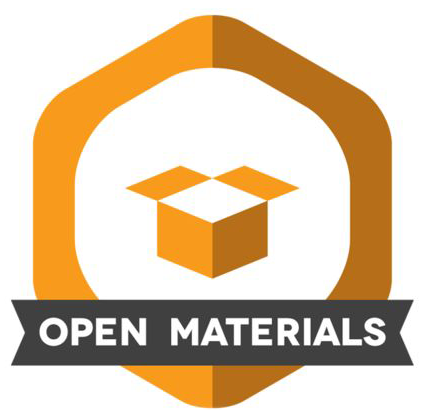

1 Open Scholarship
This book aims to provide a stepping stone for students and scholars of traditionally less quantitative and computational disciplines to gather first (hopefully positive!) experiences with statistical and computational approaches to working with empirical data1. The underlying belief is that these methods ought to be accessible to all, regardless of their academic background or personal circumstances. To this end, this book embraces the principles of Open Scholarship.
[Open Scholarship] reflects the idea that knowledge of all kinds should be openly shared, transparent, rigorous, reproducible, replicable, accumulative, and inclusive (allowing for all knowledge systems). Open scholarship includes all scholarly activities that are not solely limited to research such as teaching and pedagogy. (Parsons et al. 2022)
Chapter overview
In this chapter, you will learn about the relevance of Open Scholarship in learning how to manage, manipulate, analyse, and visualise research data. In doing so, the following aspects of Open Scholarship will be introduced:
- Open Science
- Open Source Software
- Open Education
- Open Educational Resources (OERs)
1.1 Open Science
Open Science is a major component of Open Scholarship and the two terms are frequently used synonymously. Open Scholarship, however, is broader in that it includes all kinds of knowledge, whereas Open Science focuses on what is conventionally considered “scientific knowledge”. Open Science covers many different aspects including:
| Open materials | Giving free, unrestricted, public access to research materials in a way that allows others to replicate the results of published studies and to conduct new studies based on these existing materials. Materials may include questionnaire items, all kinds of experimental stimuli, annotation schemes, inclusion and exclusion criteria, etc. (see Task 2 in Section 2.4). |
 |
| Open data | Giving free, unrestricted, public access to scientific data, whenever ethically and legally possible (see Berez-Kroeker et al. 2022). An important principle of Open Science is the sharing of FAIR data; that is data that is Findable, Accessible, Interoperable, and Reusable. In Section 2.1, we will see that studies in the language sciences can involve many different types of data including texts, tables, images, and videos. |
 |
| Open code | Making computer code freely and publicly available with appropriate documentation to make research methods and data analyses transparent. Open code can include source code for custom software and packages, code for stimuli generation, data collection and processing, statistical analysis, and data visualisation. Sharing code allows for collaborations, while sharing both code and data allows others to reproduce published results. |
 |
| Open access | Giving free, unrestricted, public access to scientific outputs, foremost publications. Contrary to a frequent misunderstanding, authors or their institutions do not necessarily have to pay article processing fees (APCs) to publish their work in open access. Publishing open access can instead involve uploading a pre-copyedit version of a publication on a public repository (see Section 2.4) or publishing in a so-called ‘diamond’ (typically non-profit) open access publication outlet (see section on Open Access in The Turing Way Community 2022). |  |
Sharing research data allows us to reproduce the analyses reported in research publications based on the authors’ original data and to test whether different analysis methods would have led to different conclusions. Sharing research materials and code means that we can replicate studies to check the robustness of published results and/or their generalisability across different populations. For example, if a journal article reports on the effectiveness of a new language teaching method based on a study conducted at a British university, we can test whether the same effect can be observed when replicating the study at a Nigerian university or an Indonesian secondary school.
Open Science advocates argue that scientific knowledge “[should], where appropriate, be openly accessible, transparent, rigorous, reproducible, replicable, accumulative, and inclusive, all which are considered fundamental features of the scientific endeavour” (Parsons et al. 2022). This corresponds to an ideal that, although probably impossible to fully achieve, is nonetheless worth striving for at all times.
Open science consists of principles and behaviors that promote transparent, credible, reproducible, and accessible science. (Parsons et al. 2022)
To conduct open science, a sound understanding of data management and of effective data analysis workflows is crucial. This textbook aims to provide a gentle, practical introduction to these foundational skills using examples from the language sciences. Published as an Open Educational Resource (see Section 1.3), it showcases linguistics and Second Language Acquisition (SLA) publications that include open data, open code and/or materials and teaches data analysis using exclusively open-source software and programming languages (see Section 1.2).
1.2 Open Source
In line with its aim to provide an accessible introduction to statistics and data visualisation, this textbook relies exclusively on open-source software and programming languages, foremost LibreOffice Calc, R and RStudio. Open source refers to software whose source code is available under a license that grants anyone the rights to study, modify, and distribute the software to anyone and for any purpose. If we think of a software application as a cake, the source code is like its recipe. It contains the list of ingredients and the steps to bake the cake. Open source means that the recipe is publicly available. You can access it, read it, and use it to bake the cake. You can also modify it to add your own twist, such as adding a new ingredient or making it vegan, and share it with others. In the context of software, this allows many people to collaborate, make improvements, and share their versions, resulting in better and more diverse software (see Figure 1.1).

Using open-source software in this introductory textbook means that anyone2 can download, install and use the required software at no cost. However, it is very important to note that not all free software (also called ‘freeware’) is open source.
Your turn!
This quiz encourages you to do some quick internet searches to find out more about open-source software.
Q1.1 Which of these is an open-source alternative to Microsoft Word?
Q1.2 Which of these is an open-source alternative to Microsoft Powerpoint?
Q1.3 Not only can software be open source, programming languages can, too. In fact, most modern programming languages are open source. In this book, we will focus on the open-source programming language R. Which of these is not an open-source programming language?
Q1.4 There are also many open-source operating systems. Which of these is an open-source alternative to the operating system Windows?
Your turn!
Your first practical task is to download and install the open-source software suite LibreOffice. This is important as we will use its spreadsheet editor, LibreOffice Calc, in the following two chapters.

LibreOffice is available for Windows, Mac and Linux. You can download it from here: https://www.libreoffice.org/download/download-libreoffice/.
Detailed installation instructions can be found here: https://www.libreoffice.org/get-help/install-howto/.
On the official LibreOffice website you can choose either:
- the latest version for “technology enthusiast, early adopter or power user”
- or the “slightly older” but more tested version.
In drafting this textbook, I used the latest version which, at the time, was version 24.2.2. The one that you download will be higher than that as the developers regularly publish updates. If you already have LibreOffice installed on your computer, now is a good time to check that your version is up-to-date.
Detailed documentation is available in many different languages: https://documentation.libreoffice.org/en/english-documentation/
Going further
In this introductory textbook, we have simplified things considerably. To be considered open source, software distributions actually have to comply with ten criteria. You can read up on them here:
To find out more about the benefits of open-source software in the context of research, I recommend reading:
1.3 Open Education
Open Education is a key component of Open Scholarship (see Chapter 1). Open Education aims to stimulate collaborative teaching and learning and to provide high-quality Open Educational Resources (OERs) that are accessible for all.
As illustrated in Figure 1.2, OERs are licensed in such a way that everyone has the right to engage in “5 Rs” when using OERs. The 5 Rs of OERs are:
- Retain - the right to make, own, and control copies of the content (e.g., download, duplicate, and store copies of an OER).
- Reuse - the right to use the content in a range of ways (e.g., as teaching materials on a course, as part of a website, or in a video).
- Revise - the right to adapt, adjust, modify, or alter the content itself (e.g., translate the content into another language, create a version for a different programming language).
- Remix - the right to combine the original or revised content with other open materials to create something new.
- Redistribute - the right to share copies of the original content, any revisions, and remixes with others (e.g., give a copy of the content to a friend).
{kind=link}
OERs may be published under different licenses and, in engaging in the 5 Rs, the exact terms of an OER’s license must be respected. For example, the web-based version of this textbook is published as an OER under the Creative Commons license CC BY-NC-SA. This means that anyone can engage in the 5 Rs with it (i.e., users are free to read and use, edit, remix, and expand upon the textbook) as long as:
the original author and source is mentioned (hence you should specify who this resource is
BY),any derived version is not made into a commercial product (
NCstands for non-commercial), and thatany derived versions of this textbook (e.g., a translated version or a version adapted for history scholars) are also shared with this same license (
SAstands for share alike).
In line with the principles of Open Education, all of the datasets used as case studies in this textbook have been published in open access. We will analyse real data from published research studies in the fields of applied linguistics and language education to learn about data management, statistics, and data visualisation.
Your turn!
Q1.5 Is it possible to reuse Figure 1.2 on a company website?
Q1.6 Which of these resources can be published as OERs?
Going further
There are thousands of high-quality Open Educational Resources (OERs) out there, yet few people are aware of them. OER databases are good starting points to start exploring OERs, e.g.:
An appendix of next-step resources also lists recommended next-step OERs on data management, data analysis in R, statistics, data visualisation, Open Science, and reproducibility.
If you want to share your own research materials, data, or OER but you’re unsure about which license to use, this handy license chooser tool is a great starting point. In addition, librarians are usually very happy to advise students and researchers on these topics.
Check your progress 🌟
You have successfully completed 0 out of 6 questions in this chapter.
Are you confident that you can…?
The next two chapters are devoted to research data management. While you may be keen to get cracking with data analysis in R, it is crucial that we first ensure that we understand what kind of research data we are dealing with, how and where they are saved, under which name, etc. otherwise nothing will work! Or at least not for very long… 😔